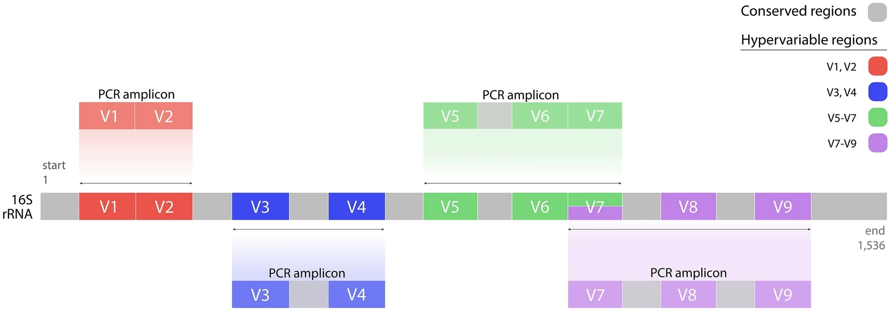
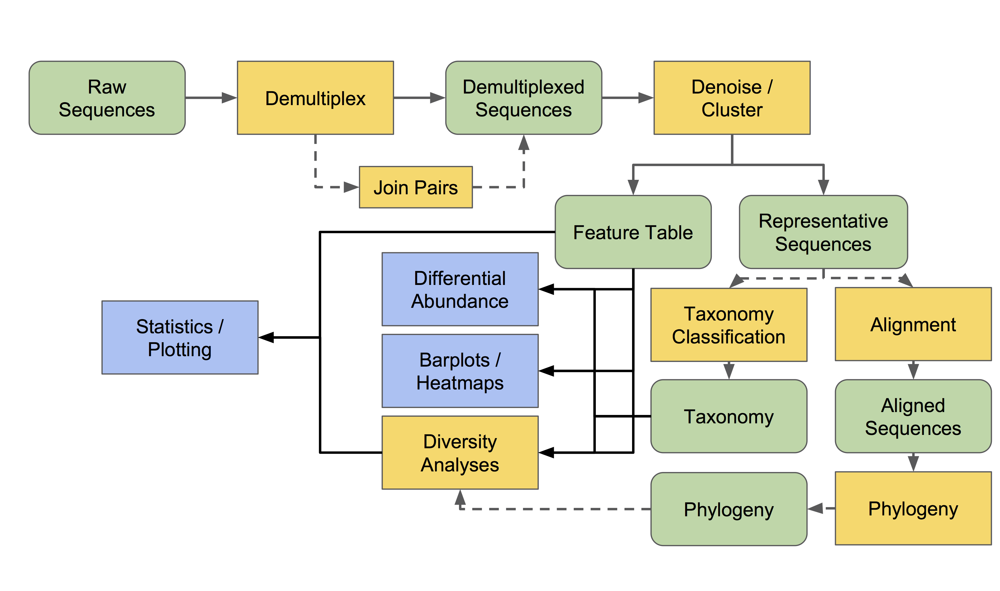

Case Study — Microbiome (QIIME2)
16S V3-V4 profiling to test whether an SFN diet mitigates vincristine-methotrexate-leucovorin chemotherapy effects on cognition, gut microbiota, and intestinal morphology in male mice.
Assess whether SFN supplementation shifts gut microbiota or rescues chemo-induced memory deficits and intestinal morphology changes.
Slides also contextualized the gut-brain axis and how dysbiosis links to inflammation and cognition.


From demultiplexing to differential abundance and interpretation, I deliver transparent QIIME2 workflows with clear behavioral ties.